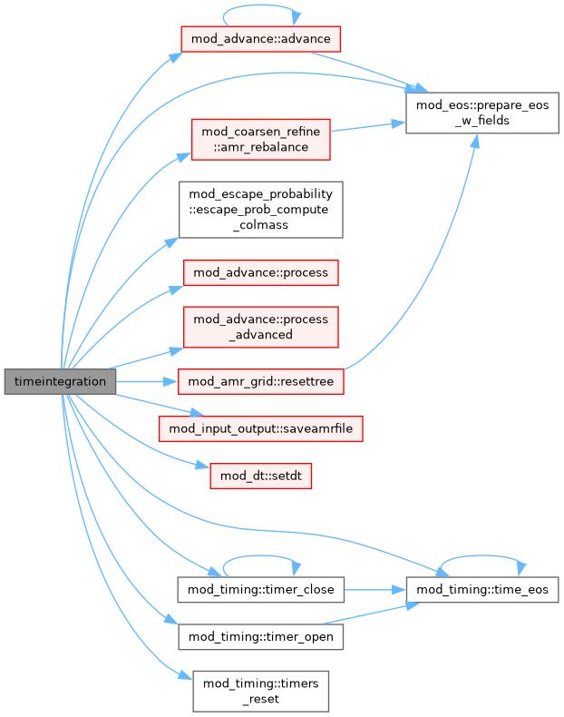

|
MPI-AMRVAC 3.2
The MPI - Adaptive Mesh Refinement - Versatile Advection Code (development version)
|
Go to the source code of this file.
Functions/Subroutines | |
| program | amrvac |
| AMRVAC solves a set of hyperbolic equations \(\vec{u}_t + \nabla_x \cdot \vec{f}(\vec{u}) = \vec{s}\) using adaptive mesh refinement. | |
| subroutine | timeintegration () |
| eos_init is called prior to physics module | |
| program amrvac |
| subroutine amrvac::timeintegration |
eos_init is called prior to physics module
finalise the EoS dispatch (tables, pointers) for the loaded physics The EoS dispatch is now complete. Wire it into the two lower-level modules that must call the EoS but cannot depend on mod_eos (hence these pointers). Both are set only when there is real work to do and guarded at the call site:
Definition at line 213 of file amrvac.t.
